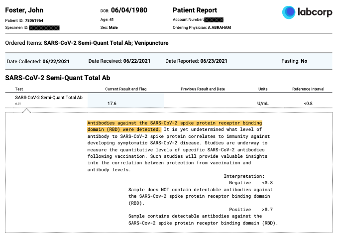

Why I'm not wearing a mask (Fall 2021)
Since I started this blog in 2014, it has been entirely technical. Usually dedicated to examples that are intended to remind my future self and/or students of interesting problem solutions through code. However, as we return to in-person teaching in the Fall semester of 2021, under a strong recommendation to wear masks, I feel compelled to explain to my students why I won't be wearing one.
This won't be a commentary giving my opinion on the effectiveness of masks, nor a suggestion on whether any other individual should or should not wear one. This is simply documenting how I arrived at my decision to not wear a mask.
Before any vaccine was available to me, I caught and recovered from COVID-19. I confirmed that I have antibodies through a laboratory test in June of 2021. A summary of the results are shown below and the full report can be downloaded here.).

This test is for antibodies against the receptor-binding-domain (RBD) of the SARS-CoV-2 spike protien (S-protien) which are known to wane over time; however, in response to recovery from infection the immune system will also produce other antibodies (e.g. N-protien), T-cells, B memory cells, etc. The number of RBD-specific memory B cells has been shown to remain unchanged after SARS-CoV-2 infection and have a resistance to RBD mutations (i.e. variants).
There are plenty of evidence-based findings that show that natural immunity is very robust. In this article by researchers at the Cleveland Clinic Health System, they follow over 50k employees and report
COVID-19 did not occur in anyone over the five months of the study among 2579 individuals previously infected with COVID-19, including 1359 who did not take the vaccine.
This report following >12,500 staff at the Oxford University Hospitals in the United Kingdom of which 1265 had positive antibody tests observed only 2 reinfections and they where both asymptotic.
A recent Israel study reported that of 835,792 Israelis known to have recovered from COVID-19, there where only 72 known instances of reinfection (0.0086%) compared with over 3000 breakthrough infections of the 5,193,499 vaccinated (0.0578%).
Finally, this last paper is not as statistically significant, but I think it’s interesting given the uniformity of the observation group. The paper Breakthrough Infections of SARS-CoV-2 Gamma Variant in Fully Vaccinated Gold Miners, French Guiana, 2021 with the main results summarized in this table describes a COVID outbreak among 44 gold miners, all men of roughly the same age and overall health status. Of the 44, 25 had been “fully vaccinated” and 9 had 1 dose — all Pfizer vaccines. Of the 25 fully vaccinated, 15 (!) had breakthrough infections. Of the 9 that had 1 dose, 6 had breakthrough infections. There were 6 that had recovered from COVID previously — 3 with 1 dose and 3 not vaccinated. Of those 6, none of them caught COVID in the outbreak.
So it appears that I should be immune, but for how long? There was this very recent paper in Nature, SARS-CoV-2 infection induces long-lived bone marrow plasma cells in humans that was then covered in this news article Had COVID? You’ll probably make antibodies for a lifetime that suggests a very long time, maybe forever.
Of course, these results should not be surprising, it's extremely rare to be infected twice by the same virus in a lifetime. The same paper linked above demonstrates
long-lasting T cells are reactive to the N protein of SARS-CoV 17 years after the outbreak of SARS in 2003; these T cells displayed robust cross-reactivity to the N protein of SARS-CoV-2.
Perhaps most interesting, this paper from 2008 demonstrates neutralizing antibody responses in 32 (all of the participants) people who had survived the 1918 H1N1 flu pandemic as children -- 90 years later!
Given these findings (and there are more, cf. Ref 6-8, I concluded that my immunity to
SARS-CoV-2 is strong and long-lived. However, there is a personal anecdote to share as well. In early
August 2021, my wife visited a friend in Florida and 48 hours after her return
she fell ill and tested positive for COVID-19. Two days after that her
daughter, my step-daugter who lives with us, also became ill with COVID-19.
Because I already had plenty of exposure to both of them in the house by
the time we knew they were infected, I made no effort to quarantine myself from
them, and did what I could to make them comfortable. My wife's case was fairly
mild with most of the symptoms subsiding after 5 days, my step-daughters case
was very mild and she was completely recovered in 36 hours. After 8 days everyone
was recovered with negative tests. I did not experience any symptoms or have any reason to
believe I was infected during this time.
Given all the information above, I do not believe there is any medical reason for me to wear a mask while teaching at this time. I believe it's easier for the students to comprehend what I'm saying without a mask on, it's easier for me to project my voice without, and it's certainly more comfortable. I do plan to continue to monitor my antibody levels and may change my mind in the future.
Comments
Comments powered by Disqus